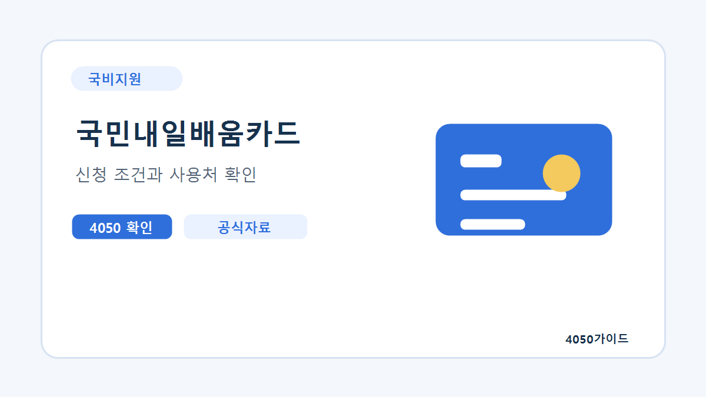
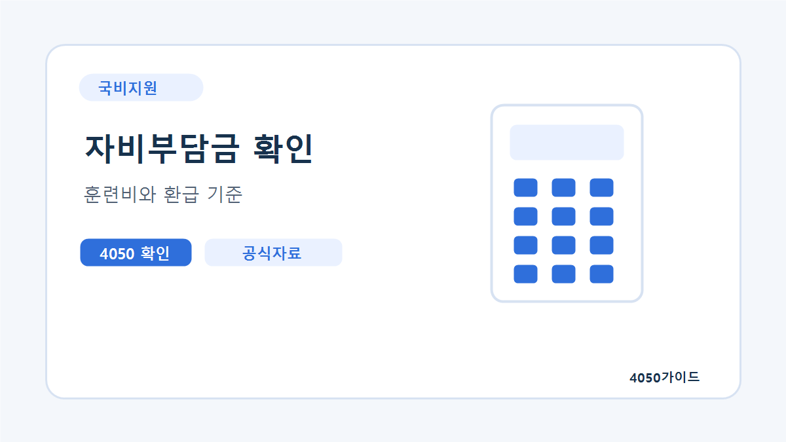
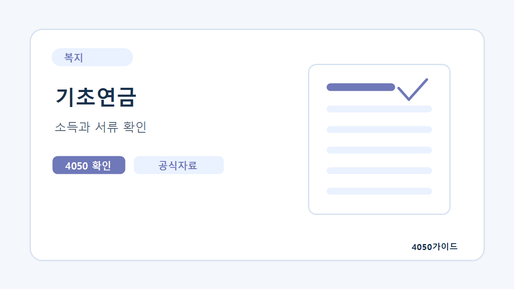
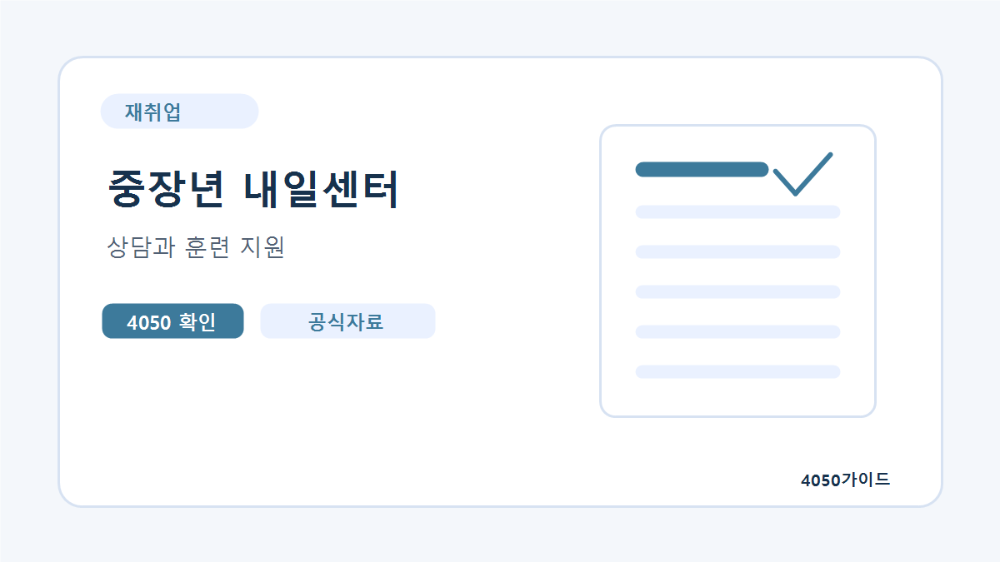
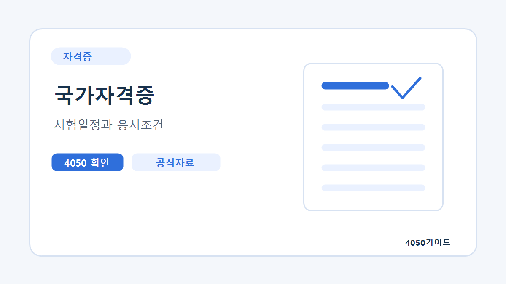
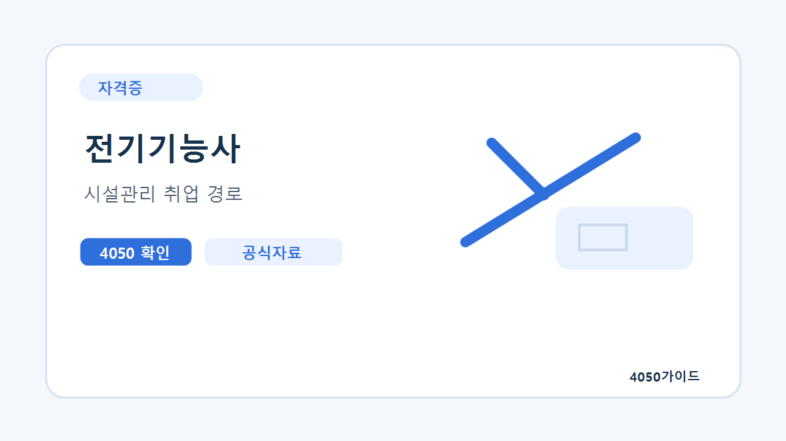
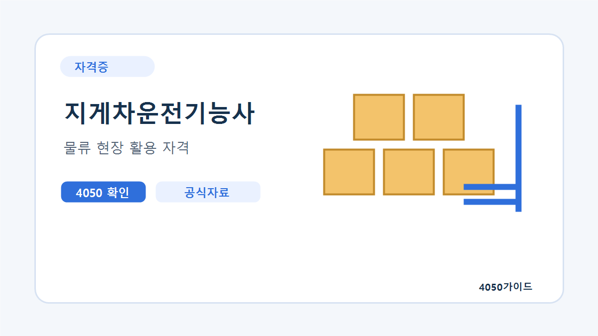

국비지원 시작 가이드
내일배움카드를 발급받기 전부터 훈련과정 선택, 자비부담금, 수료 후 활용까지 이어서 볼 수 있게 묶었습니다.
40대와 50대가 실제로 찾는 자격증, 국민내일배움카드, 복지서비스, 생활경제 정보를 공식 출처 중심으로 정리합니다.
자격증 이름이나 제도명을 몰라도 괜찮습니다. 4050이 실제로 고민하는 상황별로 먼저 읽을 가이드를 묶었습니다.
자격증을 먼저 고르기보다 일자리, 시험일정, 국비지원 가능 여부를 어떤 순서로 볼지 정리했습니다.
건물관리와 설비 분야를 생각하는 4050이 많이 비교하는 자격증의 역할과 준비 순서를 설명합니다.
돌봄 분야가 모두 같은 일은 아닙니다. 자격, 실습, 근무 형태, 체력 부담 기준으로 비교했습니다.
수료율, 자비부담금, 훈련시간, 취업 연계 정보를 함께 봐야 같은 국비지원 과정도 제대로 고를 수 있습니다.
퇴직 직후 놓치기 쉬운 행정 절차와 상담 신청 순서를 30일 안에 확인할 수 있게 정리했습니다.
처음 방문해도 눌러볼 이유가 분명한 4050 핵심 주제를 먼저 배치했습니다.

신청가이드 훈련비 지원신청 조건, 사용처, 훈련과정 선택 기준을 확인합니다.
상세 정보 보기
조건확인 국세청소득, 재산, 가구 유형 때문에 탈락하는 경우와 신청 전 확인 항목을 정리합니다.
상세 정보 보기
복지로 월 지급만 65세 이후 확인해야 할 소득인정액, 신청 장소, 준비서류를 쉽게 살펴봅니다.
상세 정보 보기
상담지원 고용노동부재취업 상담, 생애경력설계, 교육 프로그램을 어디서 이용하는지 확인합니다.
상세 정보 보기
인기자격 돌봄 분야4050 재취업에서 많이 찾는 자격증의 취득 흐름과 실제 활용처를 비교합니다.
상세 정보 보기
국가자격 전기·전자시설관리와 기술직 전환을 고민할 때 확인할 시험 정보와 활용 분야를 살펴봅니다.
상세 정보 보기복지기관과 돌봄 행정 분야로 연결되는 이수 과목과 실습 기준을 확인합니다.
상세 정보 보기
국비지원 물류 분야물류·창고 현장에서 활용되는 국가자격과 국비지원 과정 확인 방법을 살펴봅니다.
상세 정보 보기정보를 많이 보여주기보다, 신청 가능성과 실제 활용도를 기준으로 먼저 볼 주제를 골라드립니다.
구직등록, 실업급여, 건강보험료, 재취업 상담 순서로 확인합니다.
가이드 보기소득인정액, 신청 장소, 노인맞춤돌봄, 장기요양 흐름을 정리했습니다.
가이드 보기국민내일배움카드 신청 조건, HRD-Net 사용법, 과정 선택 기준을 봅니다.
가이드 보기전기기능사, 지게차운전기능사, 시설관리 자격 흐름을 먼저 비교합니다.
가이드 보기건강보험료, 국민연금, 퇴직금, 생활비를 항목별로 나눠 확인합니다.
가이드 보기퇴직, 고용, 의료비, 연금 등 4050에게 맞는 키워드로 바로 탐색합니다.
가이드 보기월간시험일정, 연간 시행계획, 상시검정을 나눠서 보면 지금 접수할 수 있는 자격증을 더 빨리 찾을 수 있습니다.
접수 중인 시험과 이번 달 시행 시험을 먼저 확인합니다.
기능사·기사·산업기사·기능장 남은 회차를 한 번에 비교합니다.
지게차·굴착기·한식조리처럼 일정 선택 폭이 넓은 종목을 따로 봅니다.
출처: Q-Net 월간시험일정 및 2026년도 국가기술자격 검정 시행계획. 실제 접수 전에는 종목별 시행 여부와 지역별 시험장을 공식 페이지에서 다시 확인하세요.
4050 준비자가 자주 막히는 필기, 실기, 문제집, 국비지원 학원 선택 기준을 따로 모았습니다.
필기 기출, 실기 배선 연습, 시험 30일 전 계획까지 시설관리 준비자 기준으로 정리했습니다.
전기기능사 가이드 읽기 상시검정기출문제만 봐도 되는지, 안전관리와 장비 구조를 어떻게 공부해야 하는지 설명합니다.
지게차 가이드 읽기 돌봄 분야50대가 헷갈리기 쉬운 이론을 생활 장면으로 묶어 정리하는 방법을 안내합니다.
요양보호사 가이드 읽기 학점은행제시험보다 과목 이수와 현장실습 일정이 중요한 자격이라 준비 순서를 따로 정리했습니다.
사회복지사 2급 가이드 읽기 실기 중심필기보다 실기 메뉴 반복, 시간관리, 위생 감점 요소를 중심으로 준비하는 방법입니다.
한식조리 가이드 읽기 시설관리강습교육 전후로 무엇을 정리해야 하는지, 법규와 기준을 표로 공부하는 방법입니다.
소방안전 가이드 읽기 교재 선택최신 출제기준, 해설 수준, 기출 수록 범위, 실기 자료까지 문제집 선택 기준을 정리했습니다.
국가기술자격 가이드 읽기 설비 분야냉동 사이클, 장비 용어, 도면 기호처럼 처음 막히는 부분부터 정리했습니다.
공조냉동 가이드 읽기 실기형손기술, 작업 순서, 시간 배분이 중요한 실기형 자격증 준비법입니다.
건축도장 가이드 읽기 국비지원어떤 자격증은 독학이 낫고 어떤 자격증은 학원이 나은지 4050 기준으로 비교합니다.
학원 선택 가이드 읽기 시험준비직장인과 퇴직자의 하루 공부 가능 시간을 기준으로 시험 전 30일 계획을 나눴습니다.
30일 계획 가이드 읽기신청 조건, 준비서류, 공식 확인처, 다음에 읽을 글을 한 흐름으로 볼 수 있게 정리했습니다.
내일배움카드를 발급받기 전부터 훈련과정 선택, 자비부담금, 수료 후 활용까지 이어서 볼 수 있게 묶었습니다.
퇴직 전 준비, 중장년 내일센터, 이력서, 면접, 경력단절 복귀까지 실제 구직 흐름에 맞춰 정리했습니다.
기초연금, 돌봄, 장기요양, 의료비, 치매검사처럼 가족이 대신 찾아보는 정보부터 배치했습니다.
퇴직 후 지출과 보험료, 국민연금, 퇴직금처럼 신청 전 숫자를 확인해야 하는 주제를 모았습니다.
자격증 이름만 보는 것이 아니라 4050 취업 연결성, 실습, 시험, 활용처 기준으로 비교합니다.
시험일정만 확인하고 끝나지 않도록 필기 공부법, 실기 준비, 문제집 선택 기준을 4050 기준으로 정리했습니다.
4050가이드에서 먼저 내용을 이해한 뒤, 실제 신청 가능 여부와 최신 공지는 아래 공식 기관에서 최종 확인하는 흐름을 권장합니다.
퇴직 직후 가장 먼저 확인할 고용 서비스입니다.
공식 사이트 보기발급 절차와 훈련과정 탐색 방법을 바로 확인합니다.
공식 사이트 보기부모님 복지와 가구별 복지서비스를 확인합니다.
공식 사이트 보기내게 맞는 정부 혜택과 신청 서비스를 찾습니다.
공식 사이트 보기4050 재취업과 연결되는 국가자격 정보를 확인합니다.
공식 사이트 보기정부24, 복지로, Q-Net 데이터를 연결해 지원제도와 국가자격 종목을 빠르게 확인할 수 있습니다.
퇴직, 고용지원, 일자리 관련 제도를 공식 데이터에서 확인합니다.
기초연금, 노인돌봄, 의료비처럼 부모님과 본인에게 필요한 복지 정보를 확인합니다.
시설관리, 물류, 조리 등 4050 재취업과 연결되는 자격 종목을 빠르게 확인합니다.
공공혜택, 복지서비스, 국가자격 검색 페이지는 직접 검색창에 입력하지 않아도 자주 찾는 키워드 버튼으로 시작할 수 있습니다.
경비원 신임교육은 4050 이후 재취업에서 현실적으로 많이 검토되는 과정입니다. 자격증 시험처럼 오래 공부하는 방식은 아니지만...
읽어보기건축도장기능사는 필기 부담보다 실기 작업 완성도가 중요한 자격입니다. 4050이 준비할 때는 손기술, 재료 사용, 작업...
읽어보기공조냉동기계기능사는 냉난방 설비, 기계실, 시설관리 업무와 연결되는 자격입니다. 4050이 처음 준비한다면 냉동 사이클, 배관, 압축기,...
읽어보기소방안전관리자는 건물관리와 시설관리 분야를 생각하는 4050이 전기기능사와 함께 자주 비교하는 자격입니다. 등급, 강습교육, 시험 범위,...
읽어보기한식조리기능사는 급식, 조리보조, 주방 업무를 생각하는 4050이 많이 검토하는 자격입니다. 필기는 기출 반복으로 준비할 수...
읽어보기사회복지사 2급은 필기시험을 단기간에 보는 자격증이 아니라 과목 이수와 현장실습을 차근차근 채워야 하는 자격입니다. 4050...
읽어보기지원금과 복지서비스는 나이, 소득, 재산, 고용 상태에 따라 결과가 달라집니다. 그래서 4050가이드는 단순 소개보다 신청 전에 확인해야 할 조건과 탈락 기준을 먼저 정리합니다.
자격증 이름만 보고 결정하면 교육비와 시간을 낭비할 수 있습니다. 전기, 지게차, 요양보호, 사회복지처럼 4050 재취업과 연결되는 분야를 중심으로 시험 정보와 활용처를 함께 확인합니다.
제도와 일정은 바뀔 수 있으므로 신청 전에는 고용24, HRD-Net, 복지로, 정부24, Q-Net 등 공식 기관의 최신 안내를 반드시 확인해야 합니다.